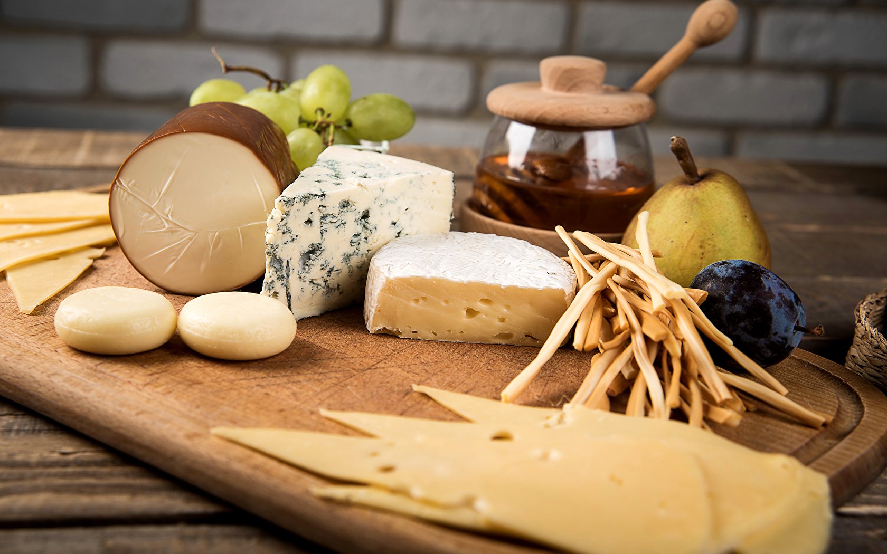

Блинчики с сыром
450 г молока, 15 готовых блинчиков, 100 г пшеничной муки, 150 г тертого сырь, 4 яйца, 100 г сливочного масла, 100 г слнвок, соль по вкусу, соус бешамель.
Соус бешамель (рецепт на с. 114) варить при кипении 10–15 мин, добавить сырые яичные желтки и тертый сыр, хорошо размешивая на слабом огне в течение 2–3 мин, после чего снять с огня.
Блинчики смазать готовой смесью так, чтобы на каждый блинчик пришлось по ложке смеси, затем свернуть их рулетом, уложить на сковороду или на смазанный маслом противень и залить сливками.
Можно посыпать блинчики тертым сыром. Запекать в средне-нагретом духовом шкафу в течение 5–6 мин.
Сырные кнели
250 г тертого сыра, 100 г манной крупы, 4 яйца.
Растереть желтки, смешать с тертым сыром и манной крупой, посолить, дать постоять 2–3 ч. Затем перемешать со взбитыми белками и положить на мокрую салфетку, придав массе форму валика. Плотно завернуть в салфетку, перевязать крепко концы ее и, закрепив ниткой край, положить рулет в кипящую подсоленную воду. Когда рулет всплывет, осторожно вынуть его, развернув салфетку. Нарезать рулет круглыми кусками, разложить на блюде и полить соусом.
Блинчики с камамбером (французский рецепт)
125 г муки, 2 яйца, 150 г молока, коробочка камамбера, 100 г тертого сыра, 50 г масла, соль, томатный соус, 1 чайная ложка водки.
Приготовить блинное тесто и испечь блины (диаметром до 10 см). Камамбер смешать с маслом до однородной массы. В каждый блин положить эту массу. Завернуть трубочкой и положить на противень. Посыпать сверху тертым сыром. Полить томатным соусом (по желанию) и подержать в духовке 15 мин.
Оладьи с сыром
2 стакана муки, 1,5 стакана молока, 2 яйца, 250 гсыра (советского, голландского), 50 г топленого масла, соль по вкусу.
Желтки растереть с солью и, помешивая, прибавить молоко и муку. Приготовить тесто, ввести в него взбитые белки яиц и осторожно перемешать.
Тесто должно быть густым как сметана.
Нарезать сыр тонкими квадратными кусочками. На разогретую сковороду с топленым маслом класть по 1 ст. ложке теста, а сверху — по кусочку сыра, после чего поджарить оладьи с обеих сторон.
Перед подачей на стол полить оладьи разогретым топленым маслом.
Клецки по-венециански
250 грубленого мяса, 50 г тертого сыра, 1 яйцо, соль, перец, 1/2 луковицы, 1/2 булки, 3 ст. ложки сметаны, неполная чайная ложка кукурузного крахмала.
Мясо хорошо перемешать с сыром, мелко нарубленным луком, яйцом и размоченной и размятой булкой. Приправить солью и перцем. Сформовать клецки, отварить их в 1/2 л подсоленной кипящей воды и вынуть. Сметану смешать с крахмалом, вылить в слегка остуженную воду и дать закипеть. Соус приправить солью и перцем, добавить зелень. Облить этим соусом клецки. Подавать с макаронами или рисом.
Рецепт рассчитан на 2 порции.
Тортильясиз лапши (мексиканский рецепт)
4 яйца, 50 г тертого сыра, соль, 2 стакана вареной лапши, 50 г нарезанного кубиками шпика.
Яйца взбить, добавить сыр, соль и лапшу. Размять массу. Затем растопить кубики шпика в сковороде средней величины. Класть в нее по 2 ст. ложки лапшовой массы и обжаривать с обеих сторон. Подать тортильяс на стол с зеленым или смешанным салатом.
Рецепт рассчитан на 2 порции.